Amazon Marketplace Pro relie une boutique PrestaShop à Amazon via l'API officielle d'Amazon, la Selling Partner API, pour que vous puissiez gérer votre activité Amazon depuis le back-office que vous utilisez déjà. Il couvre tout le cycle de vente :
Le module fonctionne entièrement au sein de votre installation PrestaShop et appelle Amazon directement depuis votre serveur. Les données produits, commandes et acheteurs sont stockées uniquement dans votre propre base de données.
IntelliPresta exploite un petit service sur intellipresta.com. Il fait deux choses, et rien d'autre :
| PrestaShop | 1.6 à 9. L'interface s'adapte aux présentations du back-office 1.6, 1.7–9 et « Basic Edition ». Le mode multiboutique est pris en charge : chaque boutique connecte son propre compte Amazon (section 11.5). |
| Compte Amazon | Offre Vendeur Professionnel, active, sur l'une des 23 places de marché prises en charge (Europe, Amérique du Nord, Brésil, Moyen-Orient, Afrique, Japon, Australie, Singapour, Inde). |
| Hébergement | PHP avec cURL. Une crontab est recommandée ; si votre hébergement n'en propose pas, le planificateur IntelliPresta prend le relais. La fonction facultative de réponses des acheteurs nécessite l'extension PHP IMAP. |
| Catalogue | Chaque produit et chaque déclinaison doivent avoir une référence (SKU) et un code-barres (EAN ou UPC). L'outil Contrôle du catalogue (section 11.3) repère ceux qui en manquent. |
Ensuite, l'ordre de travail habituel est le suivant : vérifiez les références de votre catalogue (11.3), créez un profil d'offre pour chaque famille de produits (5.4), lancez la synchronisation en deux étapes dans Catalogue > Produits (5.1), puis laissez les tâches planifiées tout maintenir à jour.
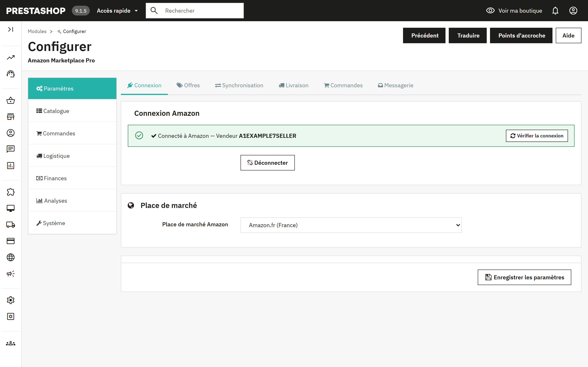
La page Configurer comporte une barre latérale de sept groupes. Chaque groupe a des sous-onglets en haut, et chaque sous-onglet contient un ou plusieurs panneaux. Le module retient le groupe sur lequel vous étiez lorsque vous rechargez la page ou enregistrez.
| Groupe | Sous-onglets | Utilisation |
|---|---|---|
| Paramètres | Connexion, Offres, Synchronisation, Livraison, Commandes, Messagerie | Tout ce que vous configurez une fois pour toutes. Un seul bouton Enregistrer les paramètres enregistre les six sous-onglets ensemble. |
| Catalogue | Produits, Profils, Majorations et règles, Règles par produit, File d'attente, Orphelines | Publier les produits sur Amazon et garder les deux catalogues en phase. |
| Commandes | Commandes, Commandes en attente, Retours | Faire entrer les commandes Amazon, gérer les ruptures de stock, les retours et les messages des acheteurs. |
| Logistique | FBA, Multi-comptes | Stock expédié par Amazon, expédition multicanal, places de marché supplémentaires. |
| Finances | Repricing, Frais, Promotions | Prix concurrentiels, frais Amazon, promotions. |
| Analyses | Rapports | Demander et télécharger des rapports Amazon. |
| Système | Automatisation, Outils, Journaux | La planification, les outils catalogue, les suppressions, les contenus des flux, le journal d'activité. |
Le groupe Paramètres forme un seul formulaire. Modifiez ce que vous voulez dans l'un de ses six sous-onglets, puis cliquez sur Enregistrer les paramètres en bas de page.
Indique si la boutique est connectée, et à quel vendeur. Se connecter à Amazon lance le parcours d'approbation dans Seller Central ; Déconnecter efface l'autorisation enregistrée. Choisissez la place de marché avant de vous connecter, car la page de consentement en dépend.
Le bandeau vert signifie seulement qu'une connexion est enregistrée. Lancer un test, dans le bandeau, montre qu'elle fonctionne toujours : le module se connecte à Amazon, lit vos commandes récentes et indique en termes simples que tout fonctionne ou ce qu'il faut faire. Lancez ce test après la connexion, ou chaque fois qu'une synchronisation signale une erreur d'autorisation. La section 13 en détaille les résultats.
Place de marché Amazon. Le site Amazon sur lequel vend cette boutique. Les places de marché supplémentaires s'ajoutent dans Logistique > Multi-comptes (section 8).
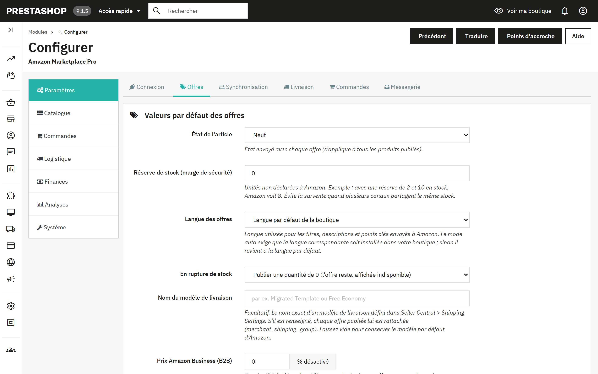
| État de l'article | État envoyé avec chaque offre : Neuf, les quatre grades Occasion, ou Reconditionné. Un produit peut le remplacer dans son onglet Amazon (section 6). |
| Réserve de stock | Unités non déclarées à Amazon. Avec une réserve de 2 et 10 en stock, Amazon voit 8. Évite la survente quand plusieurs canaux partagent le même stock. |
| Langue des offres | Langue des titres, descriptions et points clés. « Auto » suit la place de marché (l'Allemagne reçoit l'allemand, la France le français) et nécessite que cette langue soit installée dans la boutique ; à défaut, la langue par défaut de la boutique est utilisée. |
| En rupture de stock | Publier une quantité de 0 (l'offre reste, affichée indisponible) ou supprimer l'offre d'Amazon. |
| Nom du modèle de livraison | Facultatif. Le nom exact d'un modèle de livraison Seller Central ; chaque offre lui est rattachée. Les tranches par prix ou par poids se règlent dans Livraison (4.4). |
| Prix Amazon Business (B2B) | Pourcentage de remise facultatif sur votre prix normal, envoyé comme prix professionnel aux acheteurs Amazon Business. 0 le désactive. |
| Remises quantitatives B2B issues du groupe | Un groupe de clients PrestaShop dont les prix spécifiques avec une quantité minimale supérieure à 1 deviennent des paliers de volume Amazon Business, jusqu'à cinq. |
| Source du SKU | Le champ PrestaShop qui devient le SKU Amazon : référence, EAN ou référence fournisseur. Les produits dont ce champ est vide ne sont pas exportés. |
| Préfixe du SKU | Ajouté devant le SKU avec un tiret : le préfixe AMZ donne AMZ-REF123. |
| Fourchette de prix, Quantité min. | N'exporter que les produits dont le prix final se situe dans la fourchette et dont le stock atteint au moins le minimum. 0 désactive une borne. |
| Utiliser les prix spécifiques | Applique les prix spécifiques PrestaShop, éventuellement ceux d'un seul groupe de clients, avant la majoration. |
| E-mail de rapport | Les exécutions planifiées envoient un court rapport à cette adresse. Vide = aucun rapport. |
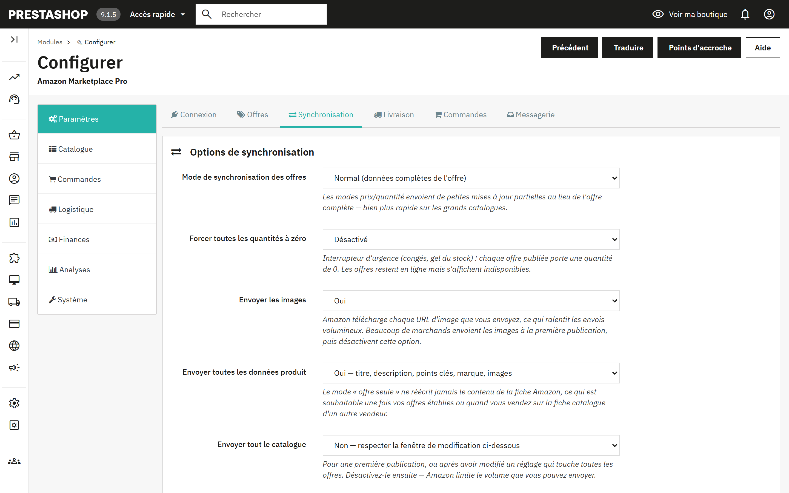
| Mode de synchronisation des offres | Normal envoie les données complètes de l'offre. « Prix uniquement » et « Quantité uniquement » envoient de petites mises à jour partielles, bien plus rapides sur les grands catalogues. |
| Forcer toutes les quantités à zéro | Interrupteur d'urgence pour les congés ou un gel du stock. Les offres restent en ligne et s'affichent indisponibles. |
| Envoyer les images | Amazon télécharge chaque URL d'image que vous envoyez, ce qui ralentit les envois volumineux. Beaucoup de marchands envoient les images à la première publication, puis désactivent cette option. |
| Envoyer toutes les données produit | Oui envoie le titre, la description, les points clés, la marque et les images. Non envoie l'offre seule (prix et stock), sans jamais réécrire le contenu de la fiche. Choisissez Non une fois vos offres établies ou quand vous vendez sur la fiche catalogue d'un autre vendeur. |
| Envoyer tout le catalogue | Ignore la fenêtre de modification, pour une première publication ou après un réglage qui touche toutes les offres. Désactivez-le ensuite. |
| N'exporter que les produits avec un ASIN | Limite les envois aux produits déjà associés à une fiche Amazon. |
| Limiter l'export à N lignes | Plafonne chaque lot envoyé entre 100 et 1500 lignes. |
| Traiter le champ EAN-13 de PrestaShop comme | Choisissez UPC si vous stockez des codes-barres américains à 12 chiffres dans le champ EAN. |
| N'exporter que les produits modifiés au cours des | La fenêtre de modification : de 1 à 24 heures. Vivement recommandée pour les grands catalogues. Les produits touchés par un changement de règle sont inclus via la File d'attente (5.6). |
| Supprimer les entrées de la file après | Durée de conservation des entrées envoyées : 1, 7 ou 15 jours. |
| Arrondi des prix | Au centime le plus proche, « Intelligent » jusqu'à ,99, ou nombre entier. Appliqué après les majorations à chaque prix exporté. |
| Envoyer les prix promotionnels | Un prix spécifique doté d'une date de début et d'une date de fin devient une promotion Amazon sur la même période, ce qui permet d'envoyer les promotions à l'avance. |
| Envoyer le prix barré | Envoie le prix avant remise comme prix barré lorsqu'il est supérieur au prix exporté. |
| Précommande | Les produits dont la date de disponibilité est future sont publiés avec cette date de réapprovisionnement. |
| Correspondance des états | Fait correspondre les trois états de PrestaShop à la liste plus riche d'Amazon. |
| Format du titre des offres | Nom du produit tel quel, ou « Marque - Nom du produit - Déclinaisons » selon la recommandation d'Amazon. La marque est omise lorsque le nom commence déjà par elle. |
| Notes d'état | Texte libre envoyé avec les états Occasion et Reconditionné. |
Trois interrupteurs font réagir le module aux événements de PrestaShop au lieu d'attendre la prochaine exécution planifiée : envoyer le prix et le stock à l'enregistrement d'un produit, confirmer l'expédition avec le suivi lorsqu'une commande passe au statut Expédiée, et annuler sur Amazon lorsqu'une commande Amazon est annulée dans PrestaShop.
Modèles de livraison par tranche de prix ou de poids. Attribuez différents modèles de livraison Seller Central selon le prix ou le poids du produit. Ajoutez des tranches avec un minimum (inclus), un maximum (exclu, 0 pour illimité) et le nom du modèle. Si l'option est désactivée, ou si aucune tranche ne correspond, c'est le modèle unique des Valeurs par défaut des offres qui s'applique.
Correspondance des transporteurs. Le code transporteur Amazon à signaler lors de la confirmation d'expédition, pour chaque transporteur PrestaShop. Les transporteurs sans correspondance sont détectés par leur nom.
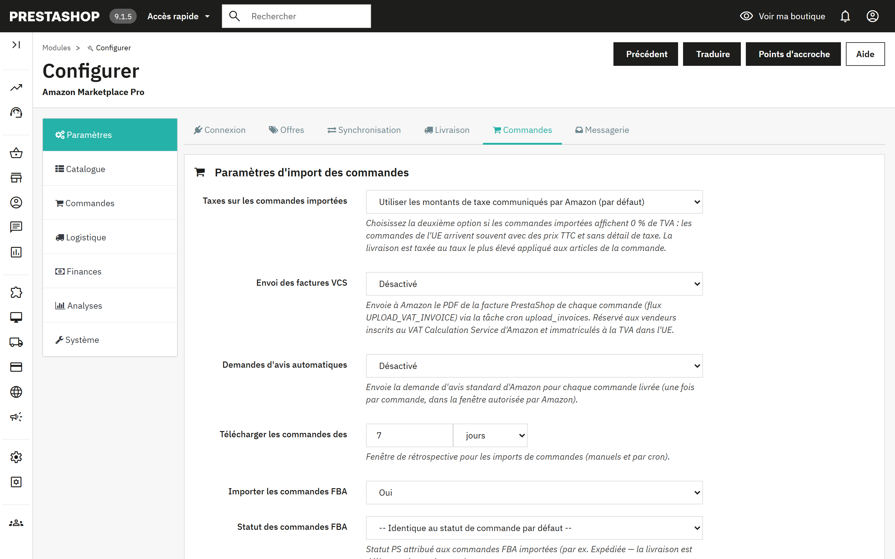
| Taxes sur les commandes importées | Utiliser les montants de taxe communiqués par Amazon, ou appliquer vos règles de taxes PrestaShop en considérant les prix Amazon comme TTC. Choisissez la seconde option si les commandes importées de l'UE affichent 0 % de TVA. |
| Envoi des factures VCS | Envoie à Amazon le PDF de la facture PrestaShop de chaque commande. Réservé aux vendeurs inscrits au VAT Calculation Service d'Amazon. S'exécute via la tâche Envoyer les factures. |
| Demandes d'avis automatiques | Envoie la demande d'avis standard d'Amazon une fois par commande livrée, dans la fenêtre autorisée par Amazon, via la tâche Demander des avis. |
| Télécharger les commandes des | Fenêtre de rétrospective des imports manuels et planifiés, en jours ou en heures. |
| Importer les commandes FBA, Statut des commandes FBA, Statut des commandes expédiées | Indique s'il faut importer les commandes expédiées par Amazon, et quel statut PrestaShop reçoivent ces commandes et celles déjà expédiées. |
| Rapprocher les lignes de commande par | Référence ou SKU personnalisé du produit (recommandé), ou identifiants PrestaShop si vos SKU Amazon ont été construits à partir des identifiants produit et déclinaison. |
| Donner la priorité à l'ASIN pour rapprocher les produits | Rapproche par ASIN avant le SKU, à l'aide de la table constituée par les synchronisations et par Associer les ASIN via l'EAN. |
| Utiliser une adresse e-mail anonymisée pour les clients | Les adresses relais d'Amazon expirent ; une adresse synthétique évite les e-mails de la boutique en échec. La messagerie acheteur via Amazon continue de fonctionner. |
| Suppression des données acheteur, Supprimer les données acheteur après | Voir la section 12. |
| Groupe de clients pour les acheteurs Amazon | Le groupe attribué aux clients créés par les imports. |
| Panier distant, Libérer une réservation après | Réserve le stock des paiements Amazon pas encore exigibles ; le restitue après le délai de grâce si la commande ne devient jamais payable. Voir 7.3. |
| Commandes sans stock suffisant | Créer quand même la commande PrestaShop, ou la mettre en attente dans Commandes en attente pour examen. |
| Transporteur par défaut, Statut de commande par défaut | Utilisés pour les commandes importées lorsqu'aucun réglage plus précis ne s'applique. |
Amazon indique le délai de livraison promis à l'acheteur ; faites correspondre chaque délai à un transporteur PrestaShop. Les Règles de statut avancées donnent à certaines commandes leur propre statut, par exemple les commandes Prime dans un statut que l'entrepôt ne peut pas manquer, ou les commandes FBA directement en Expédiée. Les règles sont évaluées de haut en bas et la première correspondance l'emporte. Facture par e-mail envoie le PDF de la facture PrestaShop, avec une pièce jointe facultative comme vos conditions générales, lorsqu'une commande atteint le statut choisi.
Amazon ne propose aucune API pour lire ce qu'un acheteur répond ; les réponses arrivent par e-mail à votre adresse vendeur. Indiquez cette boîte mail au module (hôte IMAP, port, utilisateur, mot de passe, dossier, SSL) et il classe chaque message citant une commande Amazon dans le Service client de PrestaShop, en face de la bonne commande. Utilisez une boîte dédiée ou un mot de passe d'application limité à un accès en lecture. Relever les réponses des acheteurs maintenant relève les messages non lus ; la tâche Relever les messages des acheteurs le fait à intervalles réguliers.
C'est dans le sous-onglet Produits que les produits circulent entre les deux catalogues. Les deux sens fonctionnent de la même façon : une synchronisation lit et compare d'abord, et affiche un tableau par SKU ; une seconde étape écrit ensuite. Rien n'est modifié avant la seconde étape.
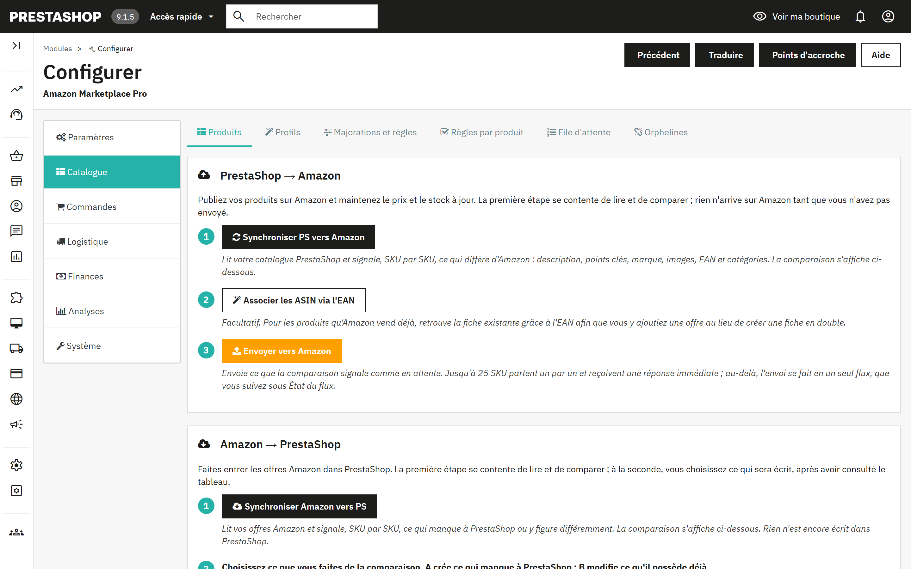
État du flux. Un envoi de plus de 25 SKU part sous la forme d'un seul flux. Vérifier l'état du flux demande à Amazon s'il est terminé et affiche, pour chaque flux, le nombre d'éléments acceptés, d'erreurs et d'avertissements. Le JSON exact de chaque flux est conservé et peut être téléchargé dans Système > Outils.
Correspondance des catégories. La méthode plus ancienne et plus simple pour indiquer à Amazon le type d'un produit : un type de produit Amazon et un browse node facultatif par catégorie PrestaShop, plus des attributs supplémentaires facultatifs en JSON. Les produits d'une catégorie associée envoient les données complètes de l'offre ; ceux d'une catégorie non associée envoient l'offre seule. Les Profils d'offre (5.4) remplissent le même rôle avec le formulaire d'attributs propre à Amazon et sont prioritaires ; la Correspondance des catégories reste une solution de repli pour les catégories sans profil.
Liste des produits Amazon. Un affichage en lecture seule de ce qu'Amazon renvoie pour votre compte.
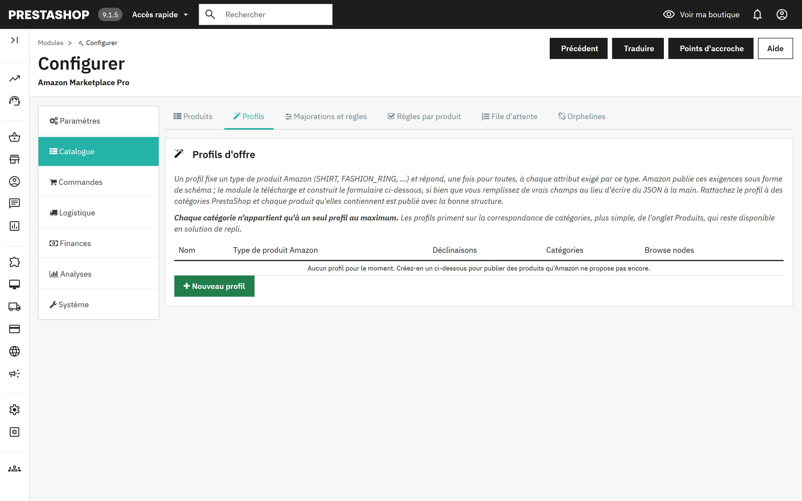
Un profil fixe un type de produit Amazon (SHIRT, FASHION_RING, etc.) et répond, une fois pour toutes, à chaque attribut exigé par ce type. Amazon publie ces exigences sous forme de schéma ; le module le télécharge et construit un formulaire, si bien que vous remplissez de vrais champs au lieu d'écrire du JSON. Rattachez le profil à des catégories PrestaShop, et chaque produit qu'elles contiennent est publié avec la bonne structure. Chaque catégorie n'appartient qu'à un seul profil au maximum.
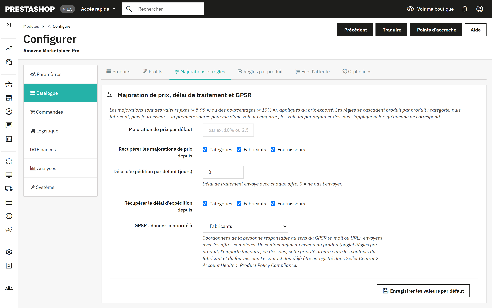
Les majorations sont des valeurs fixes (« 5.99 ») ou des pourcentages (« 10% ») appliqués au prix exporté. Les règles se cascadent produit par produit : catégorie, puis fabricant, puis fournisseur ; la première source pourvue d'une valeur l'emporte, et les valeurs par défaut s'appliquent lorsqu'aucune ne correspond. La même cascade détermine le délai de traitement et le contact GPSR.
Les tableaux Règles par catégorie, Règles par fabricant et Règles par fournisseur contiennent, pour chaque entité, la majoration de prix, le délai d'expédition, l'e-mail ou le lien GPSR, et un interrupteur de synchronisation oui/non. Le tableau des fabricants contient aussi le pays d'origine. L'enregistrement met les produits concernés en file d'attente afin que la prochaine synchronisation différentielle les renvoie.
Les Règles par produit excluent certains produits de la synchronisation Amazon ou attribuent à un produit son propre contact GPSR, qui prime sur les contacts du fabricant et du fournisseur. Les mêmes réglages, et d'autres encore, sont disponibles dans l'onglet Amazon de chaque produit (section 6).
La File d'attente liste les produits modifiés dans PrestaShop ou touchés par un changement de règle. Lorsque la fenêtre de modification est activée, les entrées actives sont incluses dans la prochaine synchronisation même si le produit lui-même n'a pas été modifié récemment. Les entrées envoyées deviennent inactives et sont purgées au terme de la durée de conservation configurée. Le panneau propose de tout activer, tout désactiver, purger les entrées expirées et tout supprimer.
L'onglet Orphelines liste les offres Amazon qui ne correspondent plus à un produit PrestaShop vendable, parce que le produit a été supprimé ou désactivé, ou que son SKU a changé. Lancez d'abord Synchroniser Amazon vers PS pour que la liste reflète votre inventaire réel, puis corrigez les produits ou supprimez les offres avec l'outil décrit en 11.3.
Chaque fiche produit de PrestaShop reçoit un onglet Amazon Marketplace Pro. Ses réglages ne concernent que ce produit et priment sur le profil d'offre, sur les règles de catégorie, fabricant et fournisseur ainsi que sur les paramètres globaux. Laissez un champ vide pour en hériter.
| Synchroniser ce produit vers Amazon | Oui, ou l'exclure de tous les exports. |
| Envoyer le prix / envoyer la quantité | Décochez l'une des deux cases pour laisser la valeur correspondante inchangée sur Amazon, par exemple lorsque vous ajustez vos prix directement sur Amazon. |
| Forçage du stock | Envoyer la quantité réelle, toujours en stock (999) ou toujours en rupture (0). |
| Prix imposé | Envoyé à la place du prix boutique ; les majorations et les règles tarifaires sont ignorées. |
| SKU personnalisé | Pour un produit qui existe déjà dans votre inventaire Amazon sous un autre SKU vendeur. Sert aux mises à jour d'offre et au rapprochement des commandes. |
| ASIN | Rattache l'offre à une fiche Amazon connue au lieu de laisser Amazon la rapprocher par code-barres. |
| Expédié par Amazon | Indique si vous l'expédiez (MFN) ou si Amazon l'expédie (AFN). |
| Délai de traitement, Modèle de livraison, Browse node, Marque imposée | Versions propres au produit des valeurs du profil et des valeurs globales. |
| État, Note d'état | Remplace la valeur globale par défaut, avec la liste complète des états d'Amazon. |
| Points clés du produit | Un point clé par ligne, jusqu'à cinq, de 500 caractères chacun. Vide : ils sont générés à partir de la description courte. |
| Contact GPSR | E-mail ou URL de la personne responsable ; prime sur le contact du fabricant et du fournisseur. |
| Options cadeau, Code Transparency | Proposer l'emballage cadeau et le message cadeau ; le code Transparency du produit s'il est inscrit au programme. |
| Propager ces réglages à | Applique les mêmes valeurs, à l'enregistrement, à tous les produits de la même catégorie par défaut, du même fabricant, du même fournisseur, ou à tous les produits actifs. Les champs d'identité (SKU, ASIN, prix, code Transparency) ne sont jamais propagés. |
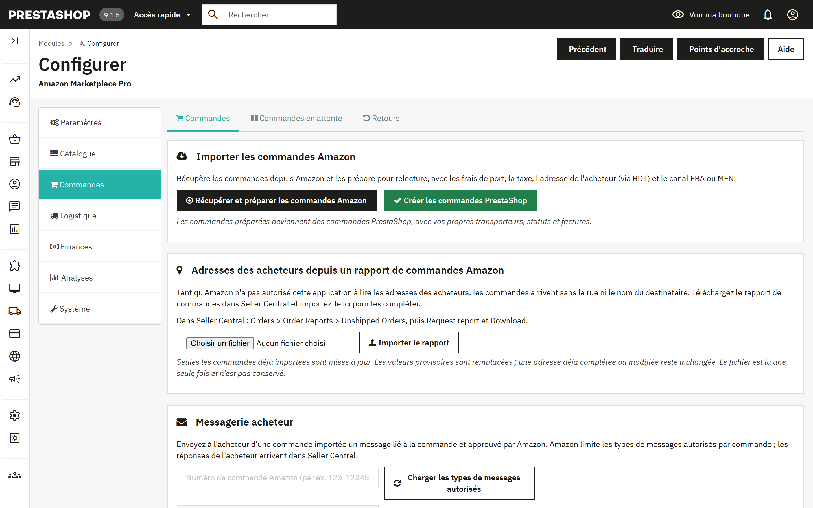
L'import se fait en deux étapes, comme pour le catalogue, pour que vous puissiez vérifier avant que quoi que ce soit ne soit créé.
Les tâches planifiées Importer les commandes et Créer les commandes PrestaShop effectuent ces deux mêmes étapes sans intervention, toutes les 15 minutes par défaut. Lorsqu'une commande passe au statut Expédiée dans PrestaShop et que le hook de 4.3 est activé, le module confirme l'expédition à Amazon avec le numéro de suivi et le code transporteur associé.
La lecture du nom, de l'adresse et du numéro de téléphone de l'acheteur directement depuis Amazon arrive bientôt. En attendant, pour les obtenir, téléchargez le rapport de commandes dans Seller Central et importez-le dans le module. Tant que vous ne l'avez pas fait, la commande affiche le client sous le nom « Amazon Buyer » et la rue « Amazon Marketplace Order ».
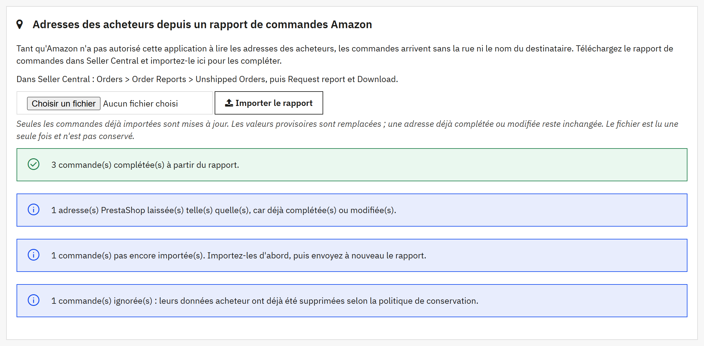
Le résultat indique combien de commandes ont été complétées, combien avaient déjà une adresse complète, combien d'adresses PrestaShop ont été laissées telles quelles, combien de commandes ne sont pas encore importées et combien ont été ignorées parce que leurs données acheteur avaient déjà été supprimées. L'import suit ces règles :
Importer à nouveau le même rapport est sans risque : chaque commande est alors signalée comme déjà complète. Les informations complétées depuis un rapport sont supprimées avec le reste des données acheteur au terme de la durée de conservation (section 12).
L'onglet Commandes en attente contient les commandes Amazon qui n'ont pas pu devenir des commandes PrestaShop faute de stock sur un produit. Réapprovisionnez et relancez Créer les commandes PrestaShop, forcez la commande avec Créer quand même, ou supprimez-la.
Le panneau Stock réservé (panier distant) liste les unités retenues pour des paiements Amazon pas encore exigibles. Amazon présente un paiement en cours comme une commande « Pending » ; lorsque le Panier distant est activé (4.5), le module retire immédiatement ces unités du stock PrestaShop afin qu'aucun autre canal ne puisse les vendre, les transmet lorsque la commande devient payable et les restitue après le délai de grâce si elle ne le devient jamais. La tâche Solder les paniers distants se charge de solder ces réservations.
Importer les retours depuis Amazon récupère les retours et les annulations ; Traiter les retours en attente crée en conséquence des avoirs PrestaShop ou annule des commandes PrestaShop. Le tableau Historique des retours affiche chacun d'eux avec son type, le montant remboursé, la commande PrestaShop et l'avoir. Les tâches Importer les retours et Traiter les retours automatisent les deux opérations.
Saisissez un numéro de commande Amazon et cliquez sur Charger les types de messages autorisés ; Amazon limite les types de messages permis pour chaque commande. Rédigez le message et envoyez-le, ou cliquez sur Demander un avis pour envoyer la demande d'avis standard d'Amazon, autorisée une fois par commande, entre 5 et 30 jours après la livraison. Les réponses arrivent par e-mail et peuvent être classées dans le Service client grâce aux réglages de Messagerie (4.6).
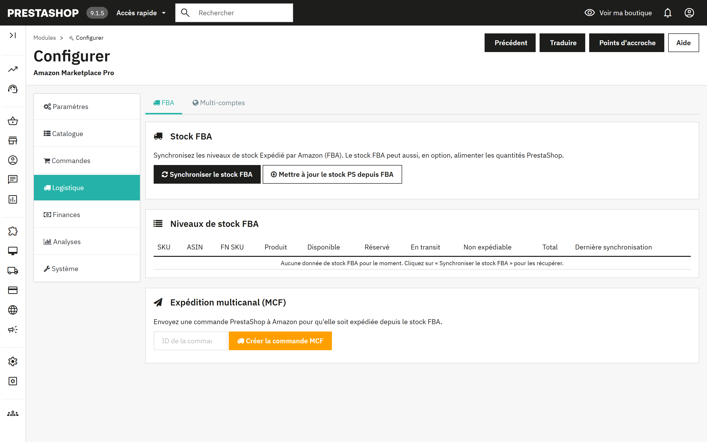
Synchroniser le stock FBA télécharge le stock qu'Amazon détient pour vous : disponible, réservé, en transit et non expédiable, par SKU. Mettre à jour le stock PS depuis FBA écrit la quantité disponible dans PrestaShop, pour les marchands dont le stock se trouve dans les entrepôts d'Amazon. La tâche Synchronisation du stock FBA exécute le téléchargement toutes les heures par défaut.
Saisissez l'ID d'une commande PrestaShop et cliquez sur Créer la commande MCF pour qu'Amazon expédie cette commande PrestaShop depuis votre stock FBA.
Ajoutez d'autres places de marché Amazon, chacune avec son propre identifiant vendeur ou celui de la place principale, et choisissez pour chacune si les commandes, les produits et le stock sont synchronisés. Les tâches Importer les commandes, toutes places de marché et Synchronisation des produits, toutes places de marché les prennent en charge. La place de marché principale définie dans Paramètres est toujours active.
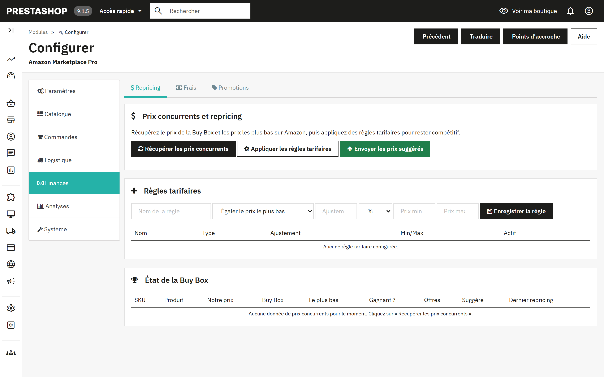
Trois boutons, dans l'ordre : Récupérer les prix concurrents télécharge le prix de la Buy Box, le prix le plus bas et le nombre d'offres pour chacune de vos offres ; Appliquer les règles tarifaires calcule un prix suggéré par SKU ; Envoyer les prix suggérés envoie ceux que vous approuvez. Le tableau État de la Buy Box compare votre prix au marché et indique si vous détenez la Buy Box.
Une règle tarifaire comporte un type (égaler le prix le plus bas ou passer en dessous, égaler la Buy Box ou passer en dessous, ou marge fixe), un ajustement en pourcentage ou en montant fixe, et un prix minimum et un prix maximum servant de garde-fous. La tâche Cycle de repricing exécute la récupération et l'application à intervalles réguliers ; l'envoi reste manuel, sauf si vous l'activez dans la tâche.
Récupérer les frais des commandes rapatrie les frais de recommandation, les frais FBA et les commissions de chaque commande depuis l'API Finances d'Amazon, pour que la marge réelle de chaque vente soit visible. Le récapitulatif les regroupe par type de frais. La tâche Récupérer les frais s'exécute toutes les six heures par défaut.
Importez les promotions appliquées aux commandes Amazon, exportez les règles panier PrestaShop à des fins de suivi, ou créez des règles panier PrestaShop à partir des promotions Amazon. Le tableau d'historique affiche chaque promotion avec son sens.
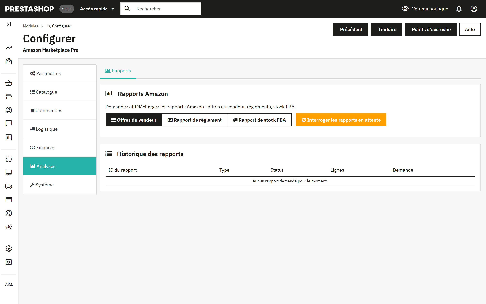
Demandez à Amazon un rapport Offres du vendeur, un rapport de règlement ou un rapport de stock FBA. Amazon prépare les rapports en arrière-plan ; Interroger les rapports en attente repère ceux qui sont terminés et les télécharge, et le tableau d'historique affiche leur statut et leur nombre de lignes. La tâche Interroger les rapports effectue cette vérification toutes les 30 minutes par défaut.
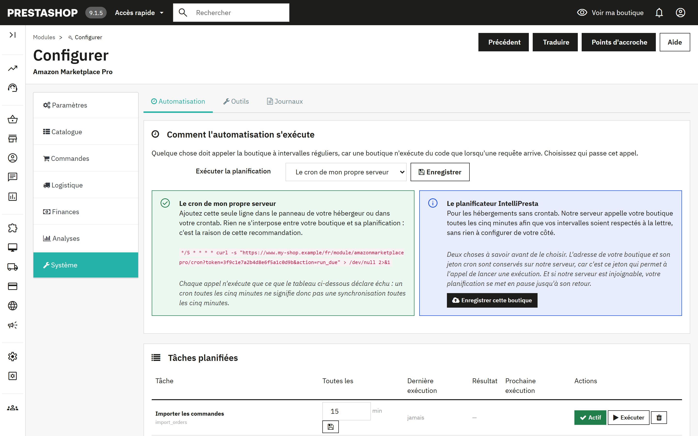
Une boutique n'exécute du code que lorsqu'une requête arrive ; quelque chose doit donc l'appeler à intervalles réguliers. Choisissez qui passe cet appel :
| Mode | Fonctionnement | À choisir lorsque |
|---|---|---|
| Le cron de mon propre serveur (par défaut, recommandé) | Ajoutez la ligne affichée dans le panneau de votre hébergeur ou dans votre crontab. Elle appelle votre boutique toutes les cinq minutes ; chaque appel n'exécute que les tâches échues. Rien ne s'interpose entre votre boutique et sa planification. | Votre hébergement propose une crontab ou une fonction de tâches planifiées, ce qui est le cas de la plupart. |
| Le planificateur IntelliPresta | Sélectionnez-le, enregistrez, puis cliquez sur Enregistrer cette boutique. Le serveur IntelliPresta appelle votre boutique toutes les cinq minutes, si bien que les intervalles sont respectés à la lettre, sans rien à configurer. L'adresse de votre boutique et son jeton cron sont conservés sur ce serveur ; s'il est injoignable, votre planification se met en pause jusqu'à son retour. Cesser d'utiliser le planificateur supprime l'enregistrement. | Votre hébergement n'a pas de crontab, ou vous préférez ne pas en gérer une. La boutique doit être accessible en HTTPS. |
La ligne cron a la forme suivante ; le module affiche la vôtre avec la bonne adresse et le bon jeton :
*/5 * * * * curl -s "https://www.your-shop.example/module/amazonmarketplacepro/cron?token=YOUR-TOKEN&action=run_due" > /dev/null 2>&1
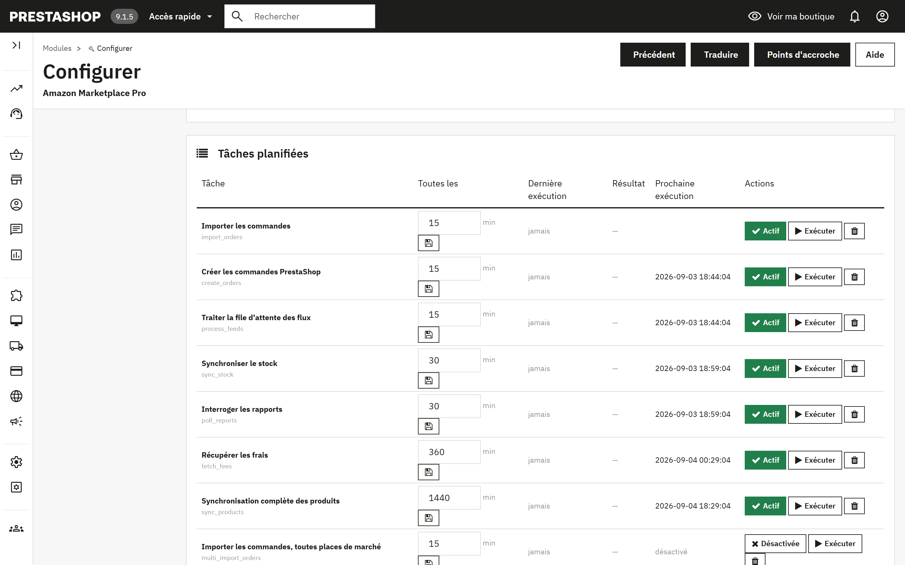
Chaque ligne correspond à une tâche, avec son intervalle en minutes, sa dernière exécution et son résultat, et sa prochaine exécution. Actif/Désactivée l'active ou la désactive, Exécuter la lance immédiatement, et la corbeille la retire. Les tâches retirées peuvent être ajoutées de nouveau avec le formulaire situé sous le tableau. Sur une nouvelle installation, toutes les tâches sont présentes et désactivées : rien ne s'exécute tant que vous ne l'avez pas décidé.
| Tâche | Par défaut | Rôle |
|---|---|---|
| Importer les commandes | 15 min | Récupère et prépare les commandes Amazon de la fenêtre de rétrospective (7.1, étape 1). |
| Créer les commandes PrestaShop | 15 min | Transforme les commandes préparées en commandes PrestaShop (7.1, étape 2). |
| Synchroniser le stock | 30 min | Envoie les quantités actuelles, et les prix lorsque le mode de synchronisation les inclut, pour les produits de la fenêtre de modification. |
| Synchronisation complète des produits | quotidien | Lit le catalogue PrestaShop, le compare à Amazon et envoie les offres en attente (5.1, étapes 1 et 3). |
| Traiter la file d'attente des flux | 15 min | Soumet sous forme de flux les modifications d'offres en file d'attente et enregistre les résultats d'Amazon. |
| Importer les retours / Traiter les retours | 60 min | Récupèrent les retours et les annulations, puis créent les avoirs ou annulent les commandes (7.4). |
| Synchronisation du stock FBA | 60 min | Télécharge les niveaux de stock détenus par Amazon (section 8). |
| Cycle de repricing | 60 min | Récupère les prix concurrents et applique vos règles (section 9). |
| Récupérer les frais | 6 h | Enregistre les frais Amazon de chaque commande. |
| Interroger les rapports | 30 min | Télécharge les rapports terminés (section 10). |
| Synchroniser les promotions | 6 h | Importe les promotions des commandes. |
| Importer les commandes / Synchronisation des produits, toutes places de marché | 15 min / quotidien | Les versions multi-places de marché de l'import des commandes et de la synchronisation des produits. |
| Demander des avis | quotidien | Envoie les demandes d'avis pour les commandes livrées, si l'option est activée en 4.5. |
| Solder les paniers distants | 15 min | Transmet ou libère le stock réservé (7.3). |
| Relever les messages des acheteurs | 60 min | Relève les réponses des acheteurs dans la boîte mail et les classe dans le Service client (4.6). |
| Envoyer les factures | 6 h | Envoie les factures de TVA des vendeurs inscrits au VCS. |
| Purger les données acheteur après le délai de conservation | quotidien | Supprime les données personnelles des acheteurs dans les commandes plus anciennes que la durée de conservation (section 12). |
Contrôle du catalogue. Amazon fait toutes ses correspondances sur la référence et le code-barres. Les produits auxquels il manque l'un des deux, ou qui partagent une référence avec un autre produit, ne peuvent être ni publiés ni rattachés aux commandes entrantes. Contrôler mon catalogue les liste.
Éditeur de références et codes-barres. Exportez tous les produits et déclinaisons en CSV, corrigez les références et les codes-barres dans un tableur, puis renvoyez le fichier. Seuls la référence, l'EAN, l'UPC et la référence fournisseur sont écrits. Cette opération modifie directement votre catalogue PrestaShop et ne peut pas être annulée ; sauvegardez d'abord, et faites-le avant de publier, sinon vous créerez des SKU en double sur Amazon.
Supprimer des offres sur Amazon. Repère les offres des produits que vous ne vendez plus, qu'ils soient supprimés, désactivés ou exclus d'Amazon, et vous laisse examiner la liste avant de supprimer celles que vous sélectionnez. La suppression retire l'offre et son historique sur Amazon, de façon irréversible. Pour interrompre la vente temporairement, publiez plutôt une quantité de 0 (4.2).
Contenus des flux envoyés. Le JSON exact envoyé à Amazon pour chaque flux, téléchargeable par ID de flux. L'assistance d'Amazon vous le demandera lorsqu'une offre est rejetée pour un motif que le rapport n'explique pas.
Les 50 dernières entrées du journal d'activité du module, avec la date, le niveau, la source et le message. Les erreurs sont mises en évidence. C'est le premier endroit à consulter lorsqu'une tâche planifiée affiche « Échec ».
Lorsque PrestaShop gère plus d'une boutique, le module fonctionne pour chaque boutique séparément. Choisissez la boutique dans le sélecteur de boutique en haut du back-office, puis ouvrez le module ; sa page affiche le nom de la boutique sous le titre.
| Domaine | Avec plusieurs boutiques |
|---|---|
| Connexion Amazon | Chaque boutique connecte son propre compte vendeur Amazon avec Se connecter à Amazon. Un compte vendeur ne peut être connecté qu'à une seule boutique pour une même place de marché, si bien que deux boutiques n'importent jamais les mêmes commandes. |
| Commandes, produits, stock et prix | Chaque boutique importe ses propres commandes Amazon et les crée dans cette boutique, et n'envoie que ses propres produits, son propre stock et ses propres prix. |
| Automatisation | Chaque boutique a sa propre planification, sa propre ligne cron et son propre jeton (11.1). Ajoutez une ligne cron par boutique, ou enregistrez chaque boutique auprès du planificateur IntelliPresta. |
| Profils, correspondances de catégories, modèles de livraison, règles tarifaires et règles par produit | Partagés par toutes les boutiques. Une boutique peut enregistrer sa propre version, qui ne s'applique qu'à elle. Dans une boutique, les éléments partagés par toutes les boutiques portent la mention Toutes les boutiques. |
| Suppression des données acheteur | S'exécute pour chaque boutique, chacune avec sa propre durée de conservation (section 12). |
La politique de protection des données d'Amazon impose de supprimer les données acheteur dans les 30 jours suivant la livraison. Lorsque Suppression des données acheteur est activée, ce qui est le cas par défaut, le module efface de sa propre table de commandes le nom, l'e-mail, la rue, la ville, la région, le code postal et le téléphone de l'acheteur, ainsi que la charge utile Amazon conservée, dès qu'une commande est terminée et plus ancienne que la durée de conservation que vous avez fixée. Les totaux, les taxes, les frais et le pays de destination sont conservés : vos états et vos registres de TVA ne sont pas affectés. Le sous-onglet Paramètres > Commandes indique combien de commandes attendent d'être effacées et propose Les effacer maintenant ; la tâche Purger les données acheteur après le délai de conservation s'en charge chaque jour.
Désactiver la suppression revient à conserver les données acheteur d'Amazon plus longtemps qu'Amazon ne l'autorise. Ne le faites que dans le cadre d'une obligation légale que vous pouvez démontrer.
Anonymiser également le client et l'adresse PrestaShop est désactivé par défaut, volontairement. PrestaShop compose ses factures à partir de l'adresse enregistrée : l'anonymiser modifie donc des documents que la loi peut vous imposer de conserver intacts, et une facture que vous devez conserver constitue précisément l'exception prévue par la politique d'Amazon. Lorsque l'option est active, un client n'est anonymisé que si toutes ses commandes sont des commandes Amazon déjà effacées, et la ville, le code postal et le pays sont conservés afin que le traitement de la TVA reste justifiable.
Le règlement européen sur la sécurité générale des produits (GPSR) impose d'indiquer sur les offres les coordonnées d'une personne responsable. Définissez-les par produit (section 6), par fabricant ou par fournisseur (5.5), et choisissez lequel des deux l'emporte. Le contact doit déjà être enregistré dans Seller Central, sous Account Health > Product Policy Compliance. Le pays d'origine se définit par fabricant.
Les commandes importées peuvent utiliser les montants de taxe communiqués par Amazon ou vos propres règles de taxes (4.5). Les vendeurs inscrits au VAT Calculation Service d'Amazon peuvent faire envoyer automatiquement leurs factures PrestaShop.
Le résultat s'affiche sous le bandeau vert, dans Paramètres > Connexion. En cas d'échec, les détails techniques sont aussi écrits dans l'onglet Journaux (11.4) ; le support vous les demandera.
| Résultat | Signification et marche à suivre |
|---|---|
| « Tout fonctionne : le module accède à votre compte Amazon. » | La connexion fonctionne. Si une synchronisation échoue malgré tout, la raison figure dans l'onglet Journaux. |
| « Amazon a refusé l'accès à votre compte vendeur. » | La connexion elle-même est correcte, mais Amazon refuse de fournir des données pour ce vendeur. Vérifiez dans Seller Central que le compte est actif et sur l'offre Vendeur Professionnel. Si c'est le cas, cliquez sur Déconnecter, puis de nouveau sur Se connecter à Amazon. |
| « Amazon n'accepte plus cette connexion. » | La connexion a été supprimée dans Seller Central. Cliquez sur Déconnecter, puis de nouveau sur Se connecter à Amazon. |
| « Impossible de joindre Amazon ou le service de connexion IntelliPresta. » | Il s'agit généralement d'un problème réseau passager. Réessayez dans quelques minutes ; si le problème persiste, contactez le support. |
| « Ce serveur ne peut pas établir de connexion sécurisée avec Amazon. » | Les certificats de sécurité du serveur sont obsolètes. Demandez à votre hébergeur de les mettre à jour. |
| Symptôme | Cause et solution |
|---|---|
| « Aucun produit avec une référence (SKU) trouvé » après Synchroniser PS vers Amazon | Les produits n'ont pas de référence dans le champ choisi comme source du SKU (4.2). Renseignez-les, ou utilisez l'Éditeur de références et codes-barres (11.3). |
| Envoi accepté, mais seule l'offre (prix et stock) arrive sur Amazon | La catégorie du produit n'a ni profil ni correspondance de catégorie, ou « Envoyer toutes les données produit » est réglé sur Non (4.3). |
| Offre rejetée avec une erreur d'attribut manquant | Amazon détermine les champs obligatoires de façon dynamique. Ouvrez le profil, trouvez l'attribut dans la liste facultative, renseignez-le, enregistrez et envoyez à nouveau. Le contenu du flux (11.3) montre exactement ce qui a été envoyé. |
| Les commandes importées affichent 0 % de TVA | Choisissez « Appliquer mes règles de taxes PrestaShop » en 4.5. |
| Une tâche planifiée affiche « Échec » | La colonne des messages et l'onglet Journaux en donnent la raison. Cliquez sur Exécuter pour réessayer après correction. Après des échecs répétés, cliquez sur Lancer un test (4.1). |
| Rien ne s'exécute alors que des tâches sont activées | Aucun cron n'appelle la boutique. Vérifiez que la ligne cron existe bien dans le panneau de votre hébergeur, ou que la boutique est enregistrée auprès du planificateur IntelliPresta et accessible en HTTPS. |
| E-mails aux acheteurs Amazon renvoyés en erreur | Les adresses relais d'Amazon expirent. Activez l'e-mail anonymisé (4.5). |
Écrivez à support@intellipresta.com. Indiquez la version du module, la version de PrestaShop, les lignes utiles de l'onglet Journaux et, pour les problèmes d'offres, l'ID du flux ou le SKU. Nous répondons sous un jour ouvré.
| SKU | Votre propre identifiant d'un produit sur Amazon. Le module le construit à partir d'un champ PrestaShop, généralement la référence. |
| ASIN | L'identifiant d'Amazon pour une fiche catalogue. Plusieurs vendeurs peuvent proposer le même ASIN. |
| EAN / UPC / GTIN | Codes-barres des produits. Amazon s'en sert pour rapprocher votre produit d'une fiche existante. |
| Fiche et offre | La fiche est la page catalogue, avec le titre, la description et les images. L'offre, ce sont votre prix et votre stock sur cette page. |
| Type de produit | Le schéma de catégorie d'Amazon (SHIRT, FASHION_RING) qui détermine les attributs qu'une offre doit comporter. |
| Profil | Les réponses enregistrées par le module pour un type de produit, rattachées à des catégories PrestaShop. |
| Flux | Un document groupé envoyé à Amazon et traité en arrière-plan. Utilisé pour les envois de plus de 25 SKU. |
| MFN / AFN / FBA | Merchant Fulfilled Network : vous expédiez. Amazon Fulfilled Network, aussi appelé Fulfillment by Amazon (Expédié par Amazon) : Amazon expédie depuis ses entrepôts. |
| MCF | Multi-Channel Fulfilment (expédition multicanal) : Amazon expédie depuis votre stock FBA une commande passée sur un autre canal, par exemple votre propre boutique. |
| Buy Box | L'offre affichée par défaut sur une fiche produit Amazon. Le repricing vise à la remporter ou à la conserver. |
| RDT | Restricted Data Token : le mécanisme par lequel Amazon communique les adresses des acheteurs à la boutique, un appel à la fois. |
| GPSR | Le règlement européen sur la sécurité générale des produits (General Product Safety Regulation), qui impose d'indiquer sur les offres les coordonnées d'une personne responsable. |
| VCS | Le VAT Calculation Service d'Amazon, dont les vendeurs inscrits envoient eux-mêmes leurs factures de TVA. |
| Fenêtre de modification | La période pendant laquelle un produit doit avoir été modifié pour être inclus dans un envoi. |
| Panier distant | Un paiement Amazon en cours, présenté comme une commande Pending, dont le module peut réserver le stock. |
Amazon Marketplace Pro est développé et maintenu par IntelliPresta et n'est ni approuvé par Amazon ou PrestaShop, ni affilié à ces sociétés. Amazon est une marque d'Amazon.com, Inc. ou de ses sociétés affiliées. PrestaShop est une marque de PrestaShop SA.